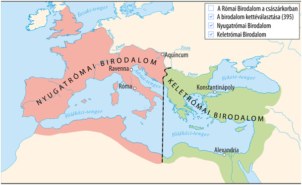
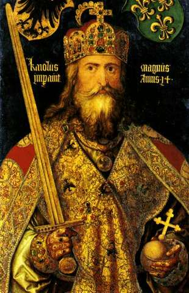
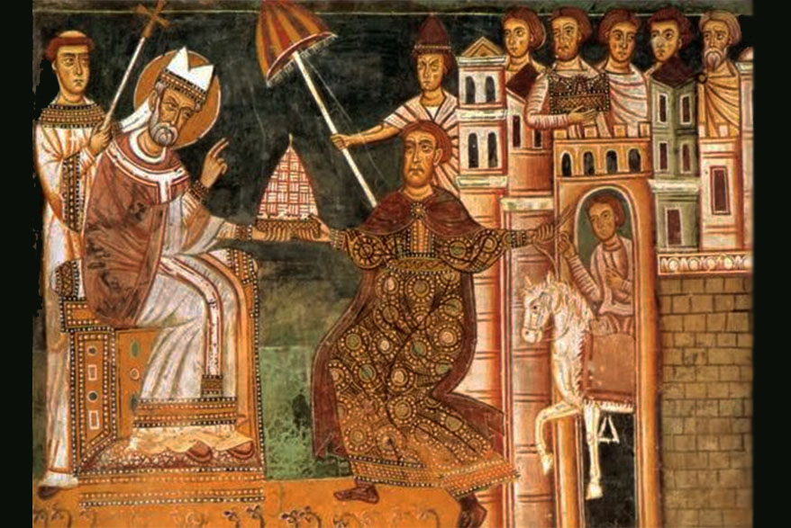
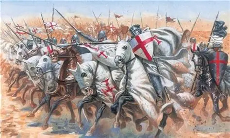
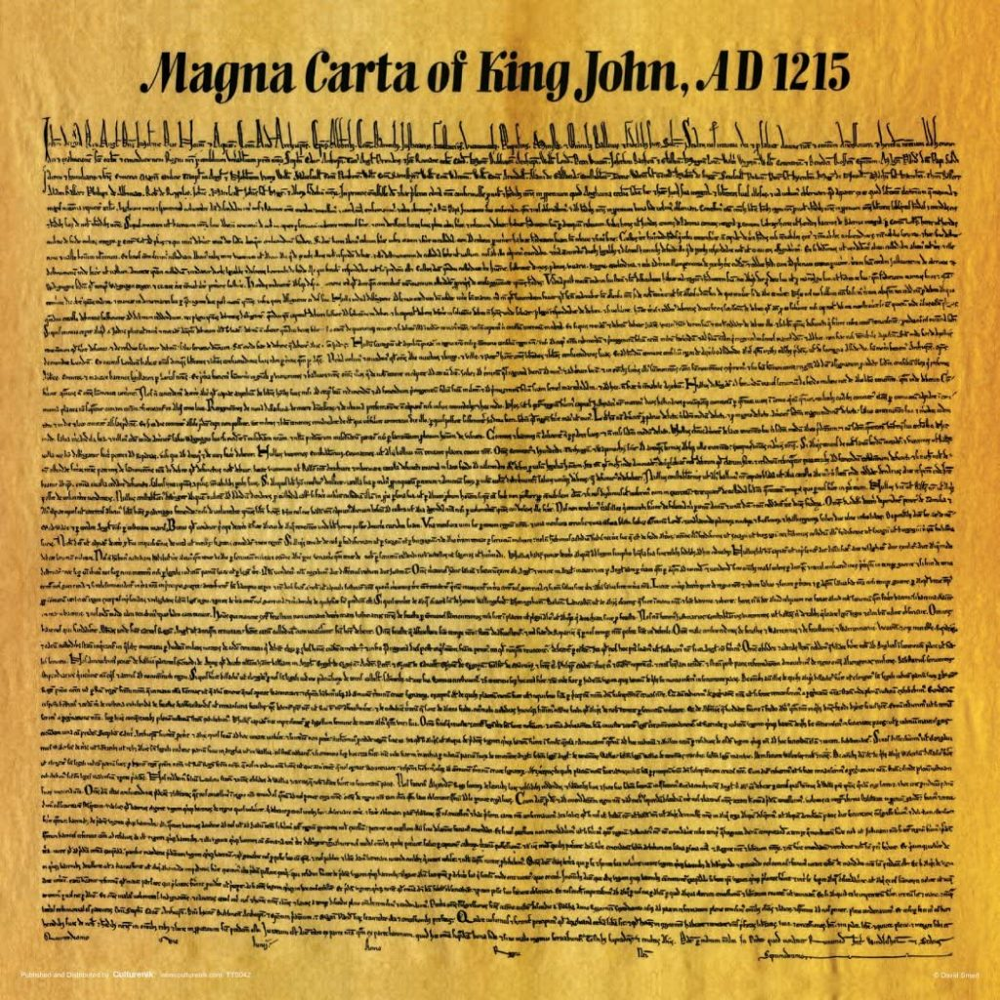
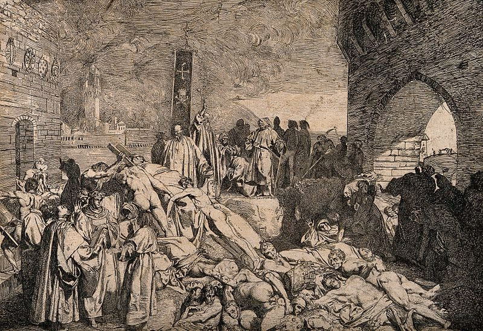
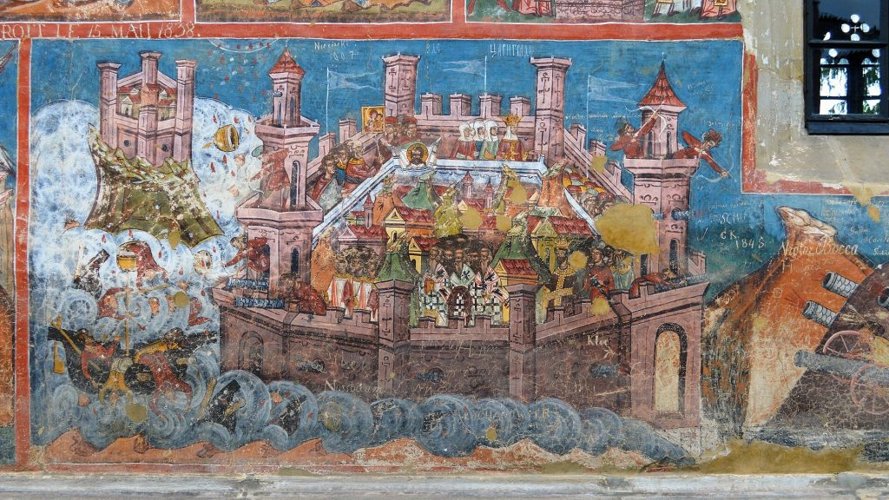

476 – A Nyugatrómai Birodalom bukása
Romulus Augustulus lemondatásával véget ért az ókor, és megszűnt az egységes római hatalom Nyugat-Európában, megkezdődött a germán királyságok kora.

800 – Nagy Károly császárrá koronázása
III. Leó pápa Rómában császárrá koronázta a frank uralkodót, ami a nyugati keresztény birodalom újjászületését és az egyház-állam szövetségét jelentette.

1054 – A nagy egyházszakadás (skizma)
A keleti (ortodox) és a nyugati (római katolikus) egyház véglegesen elvált egymástól, ami meghatározta Európa kulturális és vallási megosztottságát.

1096–1099 – Az első keresztes hadjárat
II. Orbán pápa felhívására a nyugati lovagok elindultak a Szentföld felszabadítására, ami felerősítette a pápaság tekintélyét és a Kelet-Nyugat közötti kereskedelmet.

1215 – A Magna Charta Libertatum (Nagy Szabadságlevél) kiadása
Földnélküli János angol király kényszerűségből aláírta az oklevelet, amely korlátozta az uralkodó hatalmát és biztosította a nemesség jogait, megalapozva az alkotmányosságot.

1347–1353 – A nagy pestisjárvány (Fekete Halál)
A járvány Európa lakosságának közel egyharmadát elpusztította, ami mélyreható gazdasági és társadalmi változásokhoz (munkaerőhiány, jobbágyfelszabadulás kezdete) vezetett.

1453 – Konstantinápoly eleste
II. Mehmed oszmán szultán elfoglalta a Bizánci Birodalom fővárosát, ami a középkor végét és a bizánci tudósok nyugatra menekülésével a reneszánsz fellendülését hozta.